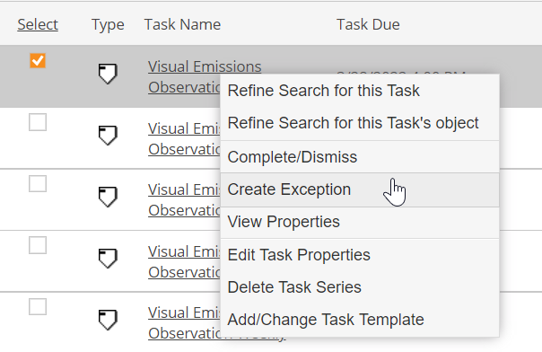
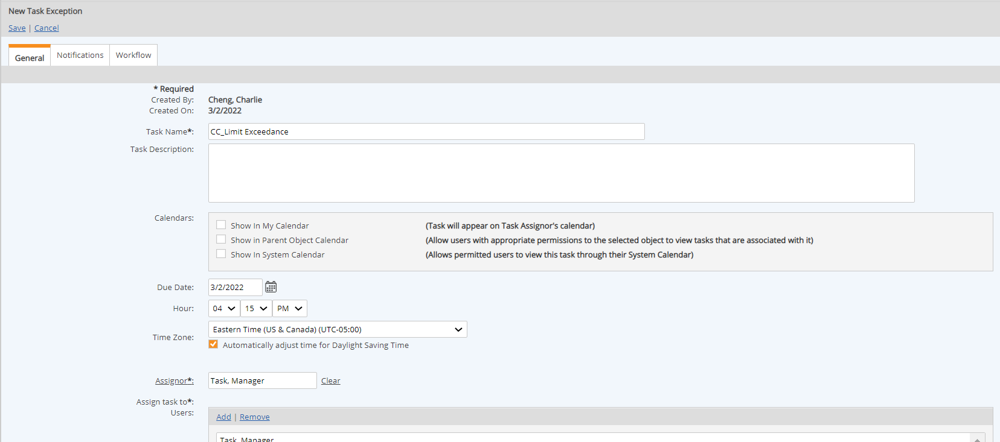

You can create a task exception for a recurrent task whenever a single instance of the task needs to be changed. For example, a scheduled monthly inspection may need to be cancelled or rescheduled in a month in which the facility is not operable during the scheduled time.
When you create a task exception, the original task instance gets dismissed status and a new single-instance task is created which has the same name as the original task plus the suffix "(exception)". If the original task instance is overdue, you must dismiss the task.
You may also need to create a task exception if a task has been completed in error and needs to be re-assigned. To do this, you must first dismiss the completed task, then create the task exception. (See instructions below.)
You must have Modify Task rights on the task in order to create an exception.
To create a task exception for an incomplete task:
Right click the task link and select Create Exception.

The New Task Exception screen appears.

Select Save.
The original task is dismissed. A new task is created with the edited information and the assignee will be notified of the new task assignment.
To create a task exception for a task that has been completed or an overdue task: